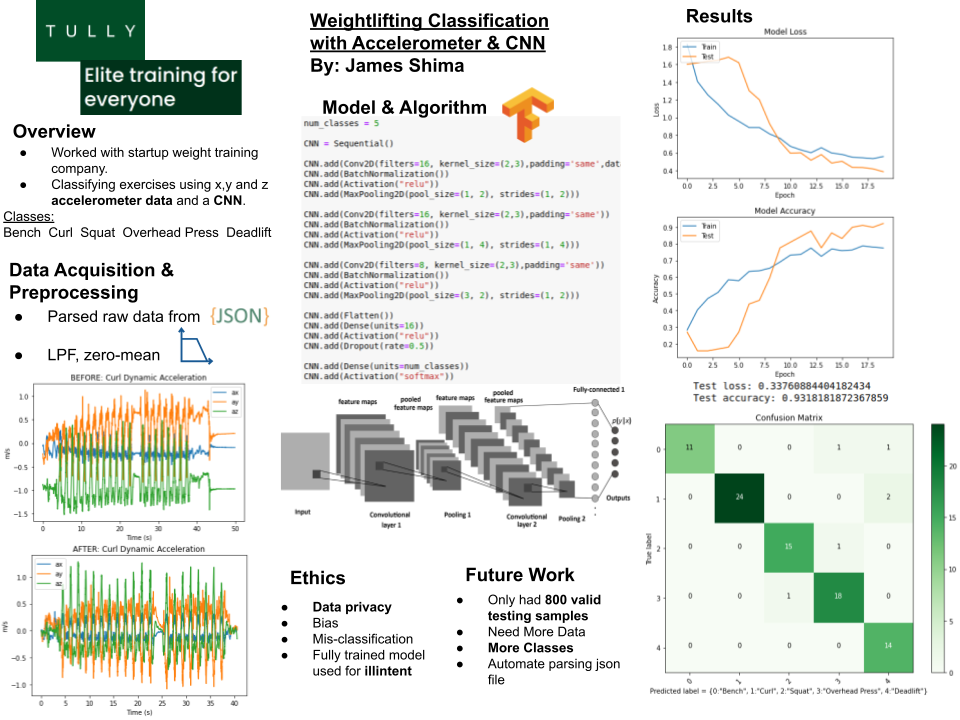
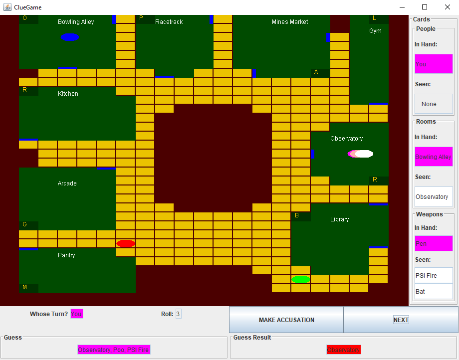

Projects
Exercise Classifier (Python/TensorFlow)
Developed proof of concept Convolutional Nueral Network to classify five different excercises. This was done by preprosessing x,y,z axis acceleration data as a 3D tensor through a multilayered CNN. Due to a current small dataset (less than 1000 samples) accuracy ranged from 86-95% depending on the distribution of spliting the training and testing data. Source code and more information can be found by clicking here.
Clue Game (Java)
Clue is a murder mystery board game for three to six players that was devised in 1943 by British board game designer Anthony E. Pratt. The game was first manufactured by Waddingtons in the United Kingdom in 1949. This project was created from the ground up using Java, JUnit, and Swing to create a single player interpretation of the board game. To play the game, click here and download either the Windows Executable or jar file to run with a Java Interpeter.
Web M.D. Plus (PostgreSQL/Python)
A fun clone of Web M.D. to practice desigining practical relational databases using PostgreSQL and Python. Click here to read the paper and here to the source code.